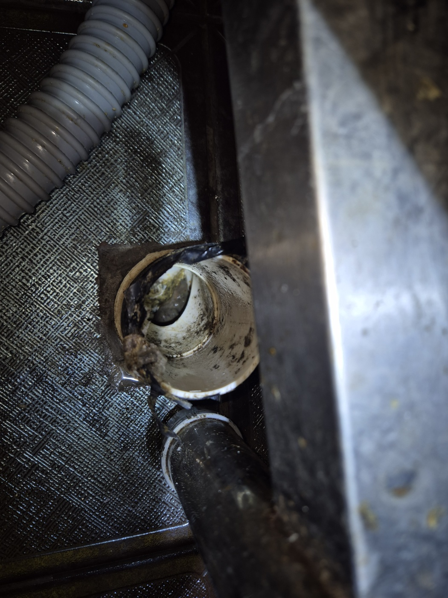
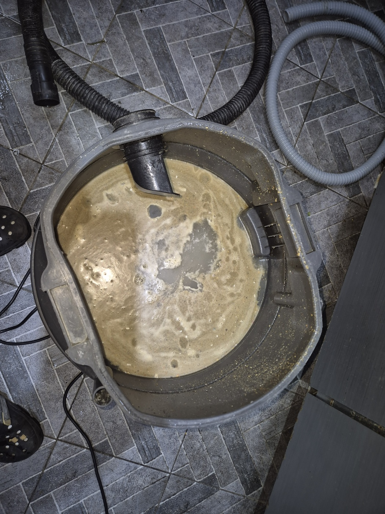
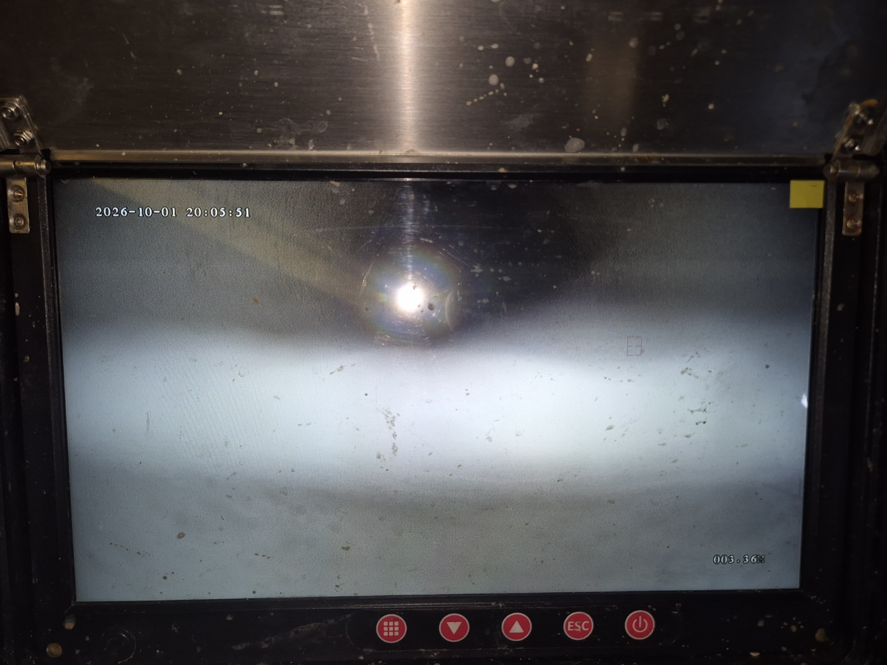

안녕하세요.. 고고고 설비입니다.. 이번에는 평택시 비전동에 있는 식당에서 바닥 하수구가 막혔다는 연락을 받고 출동한 현장을 소개해드릴게요. 저희 차량에 붙어 있는 번호를 보시고 직접 전화 주신 현장이었어요.
1. 식당 바닥 배수로 덮개 열기
주방 바닥을 따라 길게 이어진 배수로 덮개를 열고 안쪽을 확인했어요. 식당 바닥 배수로는 음식물 찌꺼기와 기름기가 흘러 들어와 쌓이기 쉬운 자리라서 막힘이 자주 생기는 곳이에요.

2. 배수구 안쪽 이물질 확인
덮개를 걷어내고 배수구 안쪽을 들여다보니 배관 입구 쪽에 찌꺼기와 이물질이 엉겨 붙어 있었어요. 겉에서 보이는 것만으로도 물이 시원하게 내려가기 어려운 상태였습니다.

3. 내시경으로 배관 안쪽 진단
내시경 카메라를 넣어서 배관 안쪽 상태를 확인했어요. 모니터에는 찌꺼기가 덩어리져서 배관 벽에 붙어 있는 모습이 보였습니다. 눈으로 직접 확인해야 어디까지 작업할지 정확하게 정할 수 있어요.

4. 석션기로 찌꺼기 흡입
석션기로 고여 있던 물과 찌꺼기를 빨아들였더니 통 안에 갈색 오물이 가득 찼어요. 이 정도 양이면 배수로가 얼마나 좁아져 있었는지 짐작이 가시죠.

5. 내시경으로 한 번 더 확인
석션으로 빨아들인 뒤에 내시경으로 배관 안쪽을 다시 한 번 확인했어요. 눈에 보이던 막힘은 정리가 됐습니다.

다만 이번 막힘은 바닥 배수로만의 문제가 아니라 메인 배관 쪽에 원인이 있어 보였어요. 그래서 메인 배관은 고압세척으로 따로 작업하시는 게 좋겠다고 사장님께 말씀드렸고, 일정은 상의해서 정하기로 했습니다.
식당 바닥 배수로는 기름기와 음식물 찌꺼기가 계속 흘러 들어가기 때문에 막히고 나서 뚫는 것보다 물 빠지는 속도가 느려졌을 때 미리 점검받으시는 편이 훨씬 수월해요. 바닥 배수로 청소를 자주 해주시고, 기름기가 많은 물은 가능하면 배수로로 바로 흘려보내지 않는 것도 도움이 됩니다.
고고고 설비는 주택, 아파트, 원룸, 상가, 공장의 생활 하수 오수 배관을 관리해 주는 업체입니다. 고고고 설비에 전화 주시면 친절상담 정확한 진단 확실한 해결로 보답해 드리겠습니다!!